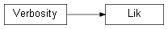

Class¶
-
class
Lik(name=None, logpdf=None, logpdf_args=None, logpdf_kwargs=None, pars_central=None, pars_pos_poi=None, pars_pos_nuis=None, pars_labels=None, pars_bounds=None, output_folder=None, input_file=None, verbose=True)[source]¶ This class is a container for the Likelihood object, storing all information of the likelihood function. The object can be directly created or obtained from an ATLAS histfactory workspace through the
DNNLikelihood.Histfactoryobject (see the Histfactory object).
Methods summary
Attributes summary
Atrribute |
Short description |
|---|---|
|
|
|
|
Inheritance diagram
